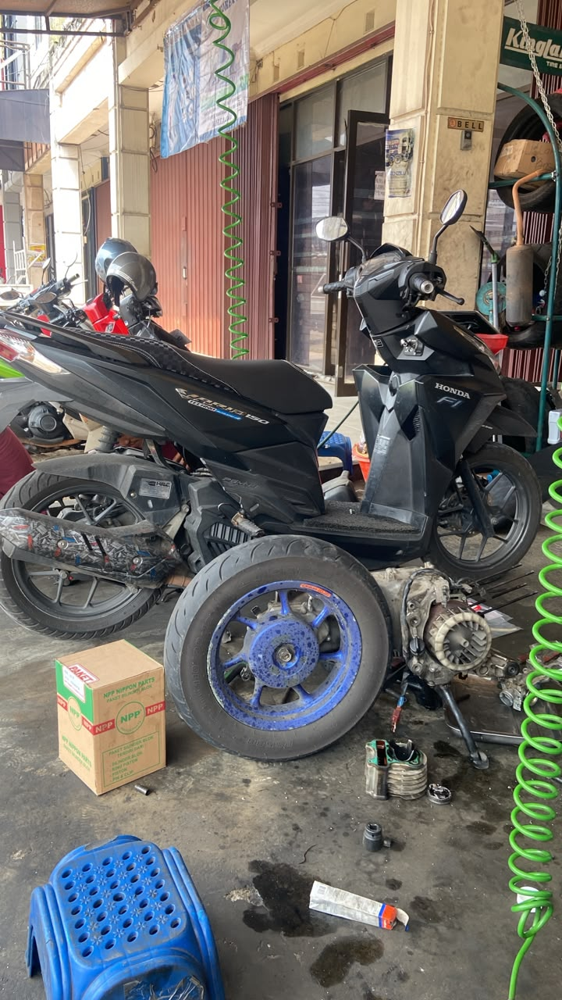
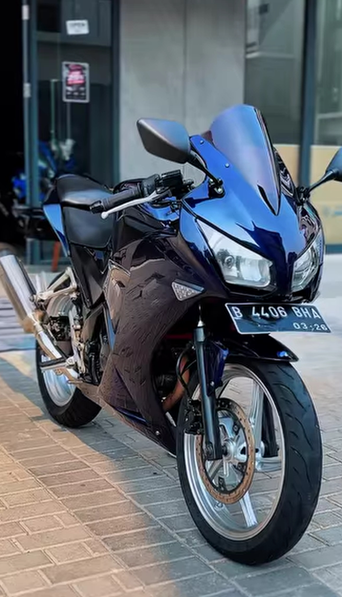
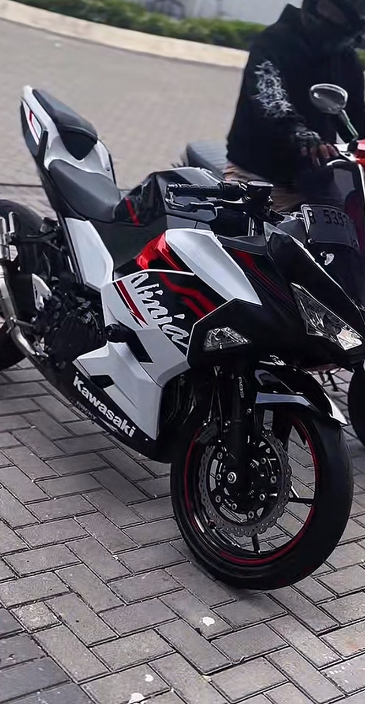
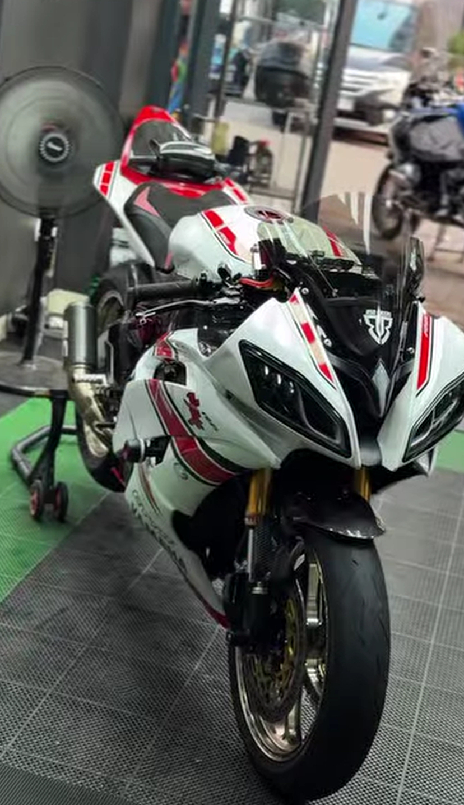
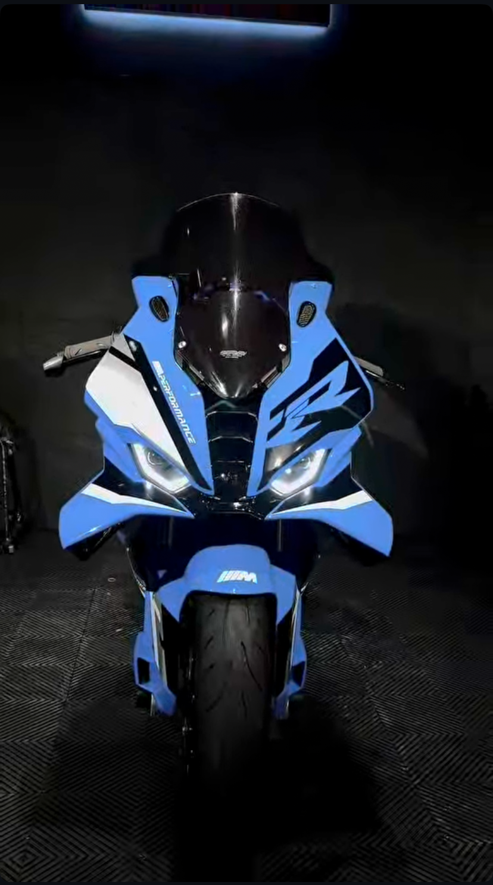

Servis rutin dan ganti oli, mesin jadi halus kembali.

Cuci bersih total dan detailing body sport.

Cuci motor premium.

Perbaikan kelistrikan, polish dan detailing body .

Cuci bersih total, polish dan detailing body sport.
Motor saya jadi bersih banget, kayak baru. Pengerjaannya juga cepat.
Miko
Mekaniknya ramah dan jelas menjelaskan kerusakan serta biayanya.
Depri Anto
Harga terjangkau, hasil servis memuaskan.
HamtaroID
Setelah servis kelistrikan, langsung normal lagi.
Andreas Andrew
Hasil polish nya kinclong, JOS JIS.
Raffasha Artha